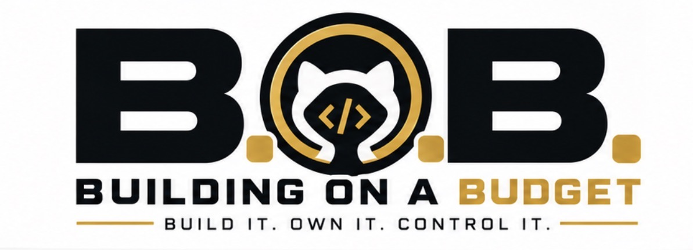

Build a brand without a big budget.
How AZHomeInstalls developed a practical service-business identity and translated it into reusable digital and print assets. This is the documented process, not a claim that an expensive agency or monthly branding platform is necessary.
01. Define what the brand actually does
The business focused on residential installation services rather than broad general contracting. Its initial offering covered TV mounting, lighting and fixture installation, fans, smart-home devices, shelving, hardware, and cord concealing. That narrower service scope helped determine the name and visual direction.
02. Move beyond the working name
FixtureWorks
A working identity during formation, not the final public brand.
AZHomeInstalls
A name tying the service offering to its Arizona market. The historical record says the selected mark used a house outline and pendant light, with black, warm gold and white.
03. Create a consistent visual system
The approved AZHomeInstalls brand standards emphasized restraint and consistency: the simplest suitable logo, generous whitespace, and no gratuitous shadows, gradients, or competing decorative effects.
#111111
#D4A017
#FFFFFF
Brand rules we documented
- Keep the website address separate from the primary logo unless the format needs a call to action.
- Use a legible supporting font family; the standards reference Inter.
- Preserve clear space around the logo.
- Prepare distinct variants for light and dark backgrounds.
- Keep social graphics readable at small mobile sizes.
04. Turn branding into useful assets
Our historical records identify web-ready logos, one-color versions, print-ready vector/PDF artwork, DTF apparel transfers, flyer templates, and business-card layouts. A later report listed 25 transfers purchased for $18 and four polos for $18, with free pressing; these figures are user-recorded purchases, not a universal pricing guide.

05. What didn't automatically count as success
A brand package is not proof of customer demand. Historical notes also reference business-card options that were quoted but not confirmed as ordered. The lesson's success criterion is a consistent, reproducible identity prepared for actual business use—not expensive-looking imagery.
Try it yourself: the B.O.B. brand checklist
- Write a one-sentence description of the service you actually provide.
- Choose a business name that customers can understand and remember; check availability before committing.
- Define a small palette and one typography system.
- Export usable logo versions for a website, social profile, print and dark backgrounds.
- Write a one-page brand standard so future work stays consistent.
- Test readability on a phone before purchasing printed materials.
06. Follow the complete beginner workshop
What you'll produce: a brand brief, name-screening record, simple logo, one-page brand guide, editable originals, web exports, and a real cost sheet. You can complete the exercise with your own business concept. The fictional demonstration below is explicitly an example, not another B.O.B. customer success story.
Prerequisites
- A phone or computer with a browser, a notes editor, and a folder you control.
- A free SVG-capable editor or code editor. Optional: use Inkscape or Penpot; check their current service terms before use. You can use a text editor for the provided SVG example.
- No paid subscription is required for this demonstration. A domain, printed materials, professional advice, or premium tools may have separate charges.
Write the customer promise before drawing anything
Download the brand brief. Enter the customer, their problem, the outcome you provide, and three boundaries. Write one sentence starting “I help…”. If a friend cannot explain the business after hearing the sentence once, simplify it.
Shortlist three candidate names
List three ideas in the brief. Check whether each is easy to say and spell, whether a matching domain is available, and whether relevant businesses/trademarks already use it. For US businesses, the USPTO trademark search is a screening resource—not legal clearance. Record what you searched and the date. Do not buy anything until you've checked.
Pick three functional colors and one font system
Pick an ink color, a background, and one accent. Record exact HEX codes in the brand standards template. Test real headings, body text, and buttons for readability rather than assuming the palette works. Start with a system font to avoid unnecessary font subscriptions.
Make a simple, editable mark
Use a text or vector editor to draw a wordmark and, only if useful, a geometric symbol. Avoid copying another business's trademark, icons without permission, or unlicensed assets. Save the editable original first; export only after you can reopen and change it.
Try this self-contained fictional example
Example only: “Northline Desk Setup,” a hypothetical service helping people organize their home office. This name is for practice and is not cleared for commercial use. Create a text file named demo-logo.svg, paste the following example code, and open it in a browser. Then change the gold color and the label to your own candidate. This is an SVG illustration for training, not an AZHomeInstalls logo.
<svg xmlns="http://www.w3.org/2000/svg" viewBox="0 0 640 160">
<rect width="640" height="160" rx="16" fill="#111111"/>
<rect x="24" y="42" width="76" height="76" rx="12" fill="#D4A017"/>
<path d="M41 80h42 M62 59v42" stroke="#111111" stroke-width="8"/>
<text x="124" y="81" font-family="Arial,sans-serif" font-size="36" font-weight="bold" fill="white">NORTHLINE</text>
<text x="125" y="111" font-family="Arial,sans-serif" font-size="19" fill="#D4A017">DESK SETUP</text>
</svg>Expected result: a dark horizontal banner with a gold square containing a plus-like line motif and a two-line wordmark. Modify the words and HEX color, save, then reopen it. If you can change it yourself, you've demonstrated control of the master file.
Create different sizes and backgrounds
Keep your SVG source. Use your editor's export feature to produce a PNG for social profiles and a dark/light variant. Avoid tiny lettering in square avatars; test a symbol-only version. A file renamed from .svg to .png is not a conversion.
Record purchases and recurring charges
Fill in the budget spreadsheet CSV. Add zeroes for free tools, and record tax/shipping and renewal rates when applicable. The AHI case study documents $18 for 25 DTF transfers and $18 for four polos; these are historical user-reported expenditures, not assumed costs for your project.
Create a versioned folder in your own account
Create my-brand/ in a repository or local folder you control, with your completed brief, standards, budget, SVG master, licensed supporting files, and exports. Use descriptive filenames. Never put private customer data or account credentials in a public repository.
Hand off to a beginner
Ask someone else to follow your brief, open the original logo, change the accent color, export a new file, and identify any future fees. Record any point where they got stuck and revise your instructions.
Pass all three B.O.B. questions
Mark the lesson complete only if the process is understandable to a beginner, the real one-time and recurring costs are documented, and you retain usable editable files plus permission to use every asset. Otherwise note what's incomplete and fix it.
Download and edit the templates
- Brand Brief — Markdown (.md): audience, promise, name checks, rights and ownership.
- Brand Standards — Markdown (.md): rules for logo, colors, type, photos and exports.
- Brand Budget — CSV (.csv): cost tracker for Excel, Numbers or Sheets.
- Ownership and Export Checklist — Markdown (.md): deliverable acceptance test.
These editable plain-text resources can be copied to your own computer. If your browser displays rather than downloads Markdown, use the save/share function or download directly from the GitHub file page.
Pass the B.O.B. philosophy test
Accessibility: Can a first-time builder follow and document each decision?
Affordability: Have all actual asset and production costs been disclosed?
Independence: Does the builder retain their editable masters, exports, accounts, and usage rights?